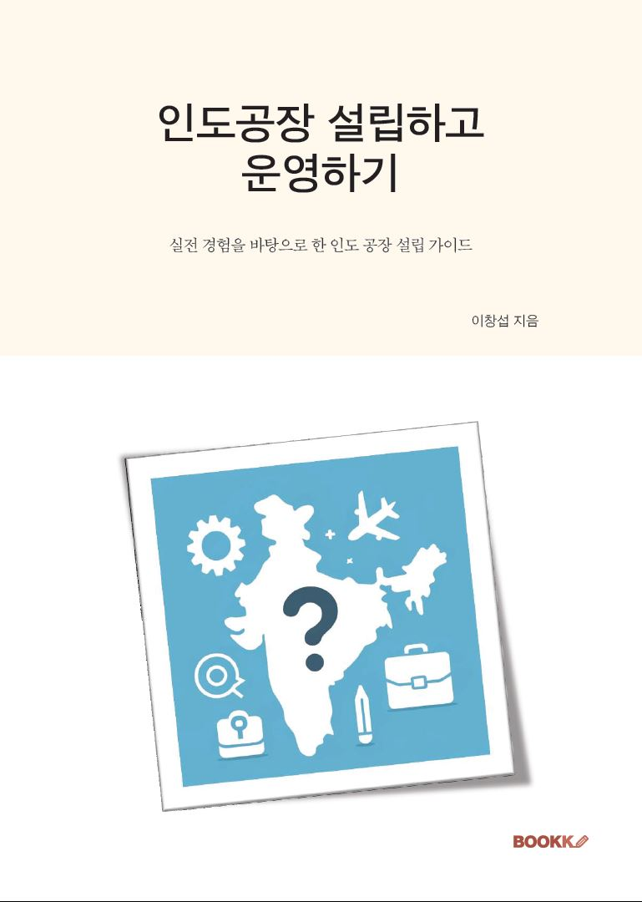

공장 설립과 가동 준비
공장 구축, 장비 설치, 생산 준비와 현장 운영에 필요한 기본 체계를 마련했습니다.
2016년부터 인도 현지에서 제조공장 설립 준비, 장비 설치, 인력 채용과 교육, 생산 및 조직 운영을 담당했습니다.
서로 다른 문화와 업무 방식 속에서 본사의 기준을 현지에서 실행 가능한 방식으로 바꾸고, 사람의 경험에 머물던 업무를 반복 가능한 운영 체계로 정착시키는 일을 해 왔습니다.
공장 설립과 운영, 그리고 운영을 마무리하는 과정에서 배운 내용을 바탕으로 2024년 『인도 공장 설립하고 운영하기』를 출간했습니다. 현재는 해외영업과 신규 시장 개척 업무를 수행하고 있습니다.
CHANG SUB LEE · FIELD OPERATOR & AUTHOR
계획을 실제 현장에 옮기고, 사람이 바뀌어도 유지되는 기준을 만드는 일에 집중해 왔습니다.
공장 구축, 장비 설치, 생산 준비와 현장 운영에 필요한 기본 체계를 마련했습니다.
현지 직원을 채용하고 교육하며, 역할과 책임이 명확한 업무 방식을 만들어 왔습니다.
생산, 품질, 자재와 관리 업무에서 반복되는 문제를 기준과 기록으로 정리했습니다.
기존 해외 거래처를 관리하고 새로운 시장과 잠재 파트너를 조사하고 있습니다.
현재의 업무와 기록은 다음 세 가지 방향에 초점을 두고 있습니다.
새 공장은 눈에 보이는 설비부터 시작하기 쉽습니다. 그러나 실제 가동을 좌우하는 것은 자재의 흐름, 작업 기준, 품질 확인, 교육과 보고 방식입니다. 설립 단계에서 운영의 하루를 미리 그려 보면 뒤늦은 수정과 혼선을 크게 줄일 수 있습니다.
문서가 많다고 시스템이 강한 것은 아닙니다. 담당자가 바뀌어도 같은 품질을 만들 수 있는지, 이상이 생겼을 때 기록을 따라 원인을 찾을 수 있는지가 더 중요합니다. 기준은 짧고 명확하게 만들고, 교육과 점검을 통해 현장의 습관으로 정착시켜야 합니다.
기준은 분명해야 하지만 전달 방식까지 본사와 같을 필요는 없습니다. 무엇을 반드시 지켜야 하는지와 현지에서 판단할 수 있는 범위를 구분하면 책임과 자율성이 함께 생깁니다. 조직 운영은 통제보다 이해 가능한 기준을 만드는 일에 가깝습니다.

인도에서 제조공장을 설립하고 운영하며 직접 겪은 시행착오와 실무 경험을 정리한 책입니다.
공장 설립 준비부터 현지 인력 채용과 교육, 생산과 품질 관리, 조직 운영까지 인도 제조 현장에서 실무자가 마주하게 되는 주요 과제와 판단 기준을 담았습니다.
인도 진출을 준비하는 기업과 현지 공장 또는 법인 운영을 맡은 실무자에게 실제 현장을 이해하는 데 도움이 되는 내용을 전하고자 했습니다.
책 안내 책은 교보문고, YES24, 알라딘 등 주요 온라인 서점에서 제목으로 검색하실 수 있습니다.
인도 공장 설립과 현지 조직 운영, 해외시장 개척 또는 책과 이곳의 기록에 관해 이야기를 나누고 싶다면 이메일이나 LinkedIn으로 연락해 주세요.
연락은 이메일 또는 LinkedIn을 이용해 주세요.